Trim Removal/Installation - Pillar Areas
Trim Removal/Installation - Pillar AreasSpecial Tools Required
KTC trim tool set SOJATP2014 *
* Available through the American Honda Tool and Equipment Program
A-Pillar Trim
SRS components are located in this area. Review the SRS component locations, precautions, and procedures before doing repairs or service.
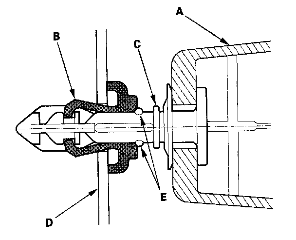
NOTE:
- Follow the A-pillar trim installation procedure carefully; improper installation could cause the side curtain airbag to deploy improperly and possibly cause injury.
- Put on gloves to protect your hands.
- Use the appropriate tool from the KTC trim tool set to avoid damage when prying components.
- Take care not to scratch the trim and panels.
- The upper clip in the A-pillar trim (A) consists of a grommet (B) and a pin (C). The grommet expanded with the pin secures it to the body panel (D). The projections (E) on the pin is broken during removal, so the clip must be replaced with a new one when the trim is reinstalled.
1. Pull the door opening seal away from the A-pillar as needed.
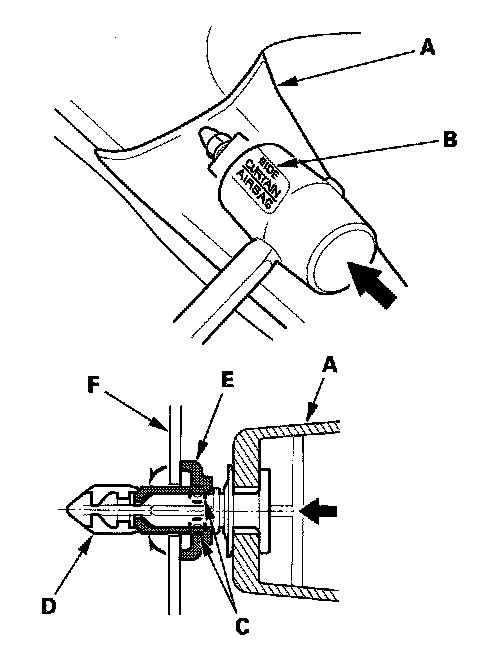
2. Hit the upper clip in the A-pillar trim (A) with a rubber mallet. The clip is under the "SIDE CURTAIN AIRBAG" mark (B). Hitting the clip breaks the projections (C) on the pin (D) and pushes it into the grommet (E) and against the body (F). The grommet becomes narrow.
NOTE: The clip must be replaced with a new one when the A-pillar trim is reinstalled.
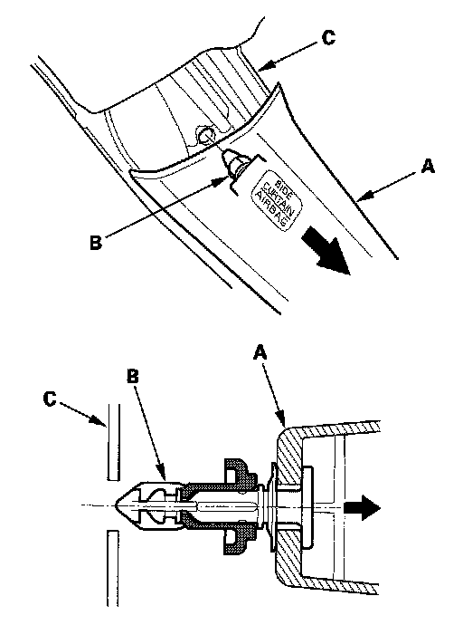
3. Pull the front of the A-pillar trim (A) back by hand to remove the upper clip (B) from the body (C).
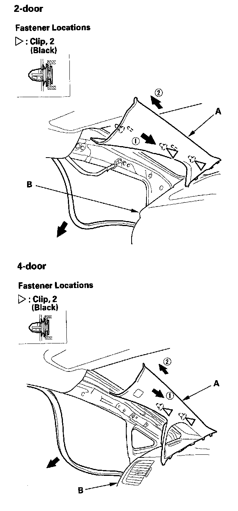
4. Pull the A-pillar trim (A) by hand to detach the clips. Pull the trim up from the dashboard (B), then remove it.
5. If the side curtain airbag has deployed, replace the A-pillar trim and all clips on the trim with new ones.
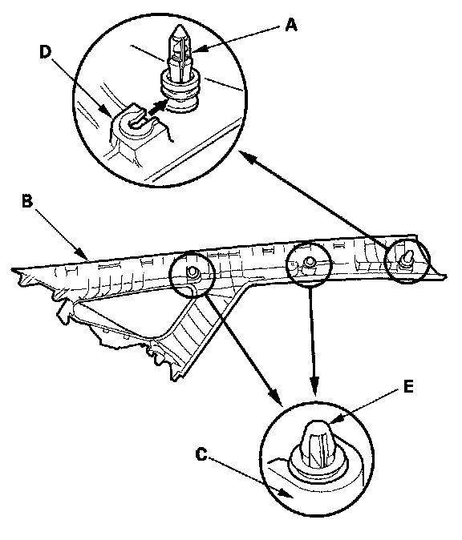
6. If the side curtain airbag has not deployed, remove the upper clip (A) from the removed A-pillar trim (B) and discard it. Then check the trim:
- To prevent the side curtain airbags from deploying improperly and possibly causing injury, inspect the A-pillar trim and replace it if it has any of these types of damage:
- Any cracks, deformations, or stress-whitening in the A-pillar trim
- Any cracks or stress-whitening in the clip seating surfaces (C, D)
- Replace the lower clips (E) if it is damaged.
- Replace the upper clip with a new one.
- 4-door A-pillar trim is shown; 2-door A-pillar trim is similar.
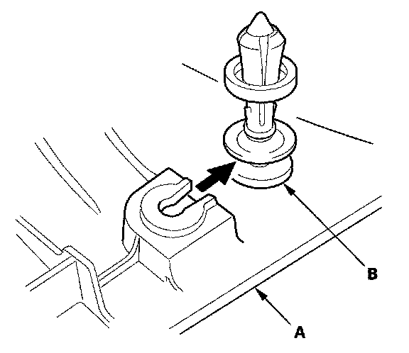
7. Before installing the A-pillar trim (A), whether replaced or reinstalled, temporarily remove a new upper clip (B).
8. Check the overlap between the headliner and A-pillar trim, and if necessary, adjust it.
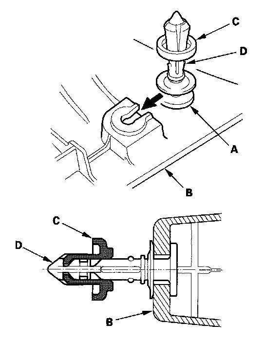
9. Carefully install a new upper clip (A) to the A-pillar trim (B). Be sure that the grommet (C) is nearest to the top of the pin (D) as shown.
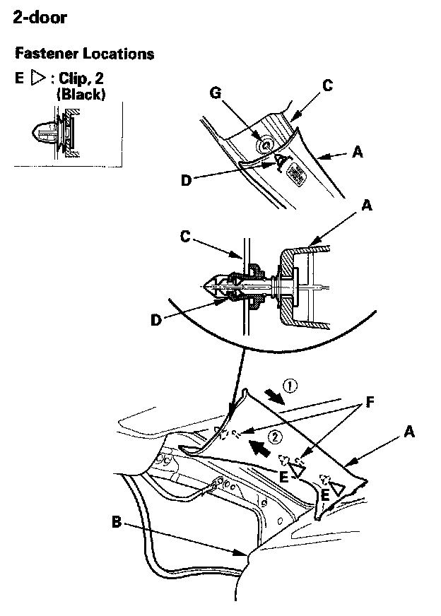
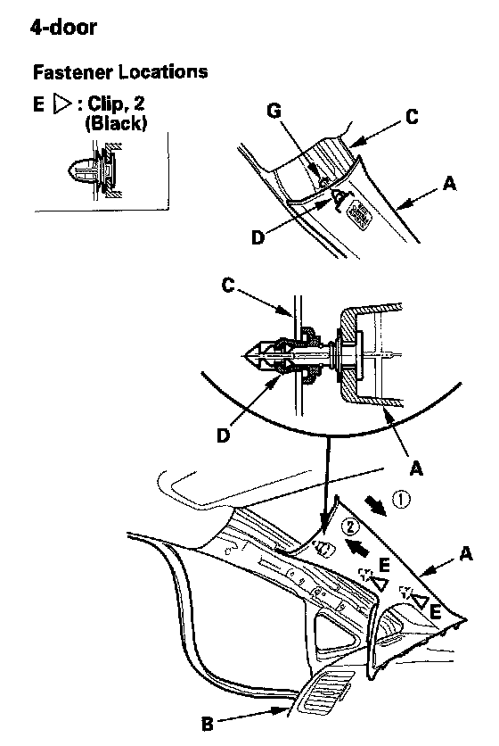
10. Reinstall the A-pillar trim (A).
1. Insert the bottom of the trim into the dashboard (B).
2. Place the trim over the A-pillar (C), and fit its upper clip (D), and lower clips (E), and pins (F) into the holes (G) in the A-pillar, then lightly push the trim into place.
NOTE:
- Make sure the side curtain airbag isn't tucked down under the clips and ribs.
- Push lightly on the upper clip. If you push too hard, the clip will be damaged, and it will not hold the trim properly.
11. Reinstall the front door opening seal.
Special Tools Required
KTC trim tool set SOJATP2O1 4 *
* Available through the American Honda Tool and Equipment Program
B-Pillar Upper/Lower Trim - 4-door
SRS components are located in this area. Review the SRS component locations and the precautions and procedures before doing repairs or service.
NOTE:
- Put on gloves to protect your hands.
- Take care not to bend or scratch the trim and panels.
- Use the appropriate tool from the KTC trim tool set to avoid damage when prying components.
1. Remove these items:
- Front door sill trim
- Rear door sill trim
- Front door opening seal, as needed
- Rear door opening seal, as needed
2. Slide the front seat forward fully.
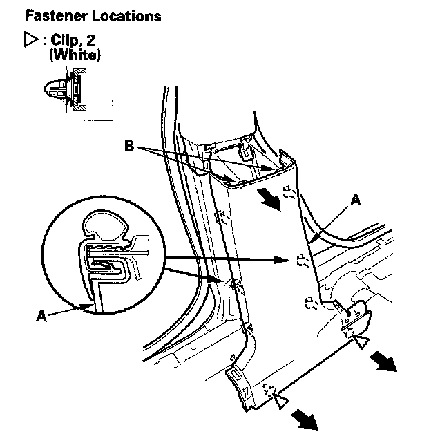
3. Remove the B-pillar lower trim (A).
1. Pull the upper portion of the trim back to release the upper hooks (B).
2. Detach the lower clips by pulling the bottom of the trim back by hand.
4. Remove the front seat belt lower anchor.
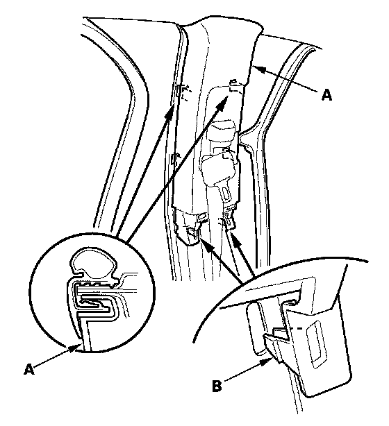
5. Pull the bottom of the B-pillar upper trim (A) back by hand to detach the lower hooks (B).
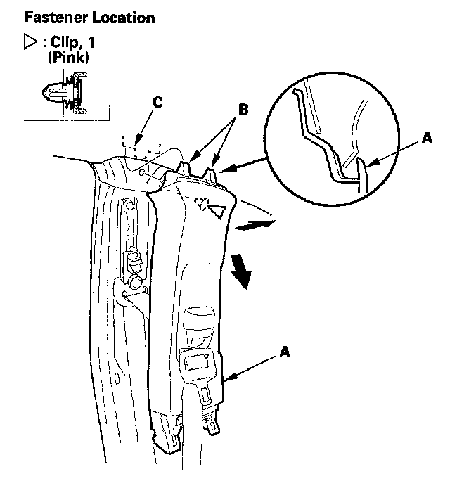
6. Detach the upper clip by pulling the top of the B-pillar upper trim (A). Pull the trim down to release the upper hooks (B) from the side curtain airbag B-pillar bracket (C).
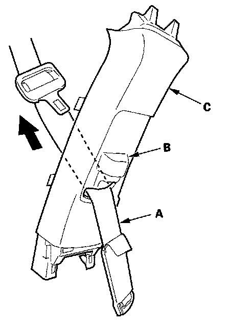
7. Pass the front seat belt (A) lower anchor out through a hole in the slider (B), then remove the B-pillar upper trim (C).
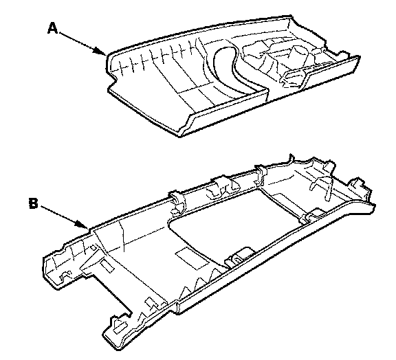
8. Remove the slider (A) from the B-pillar upper trim (B).
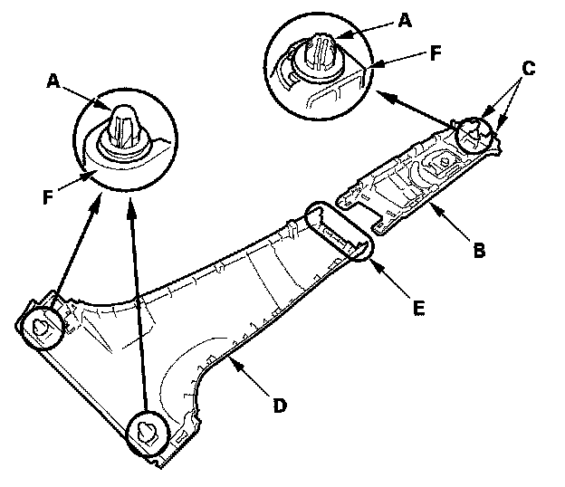
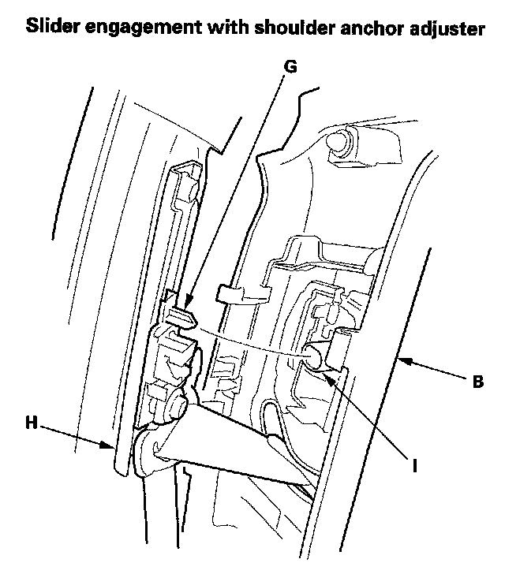
9. Install the trim in the reverse order of removal, and note these items:
- Check if the clips (A) are damaged or stress-whitened, and if necessary, replace them with new ones.
- If the side curtain airbag has deployed, replace the B-pillar upper and lower trim and all clips on the trim with new ones.
- To prevent the side curtain airbags from deploying improperly and possibly causing injury, inspect the trim and replace it if it has any of these types of damage:
- Any cracks or deformations in the B-pillar upper trim (B) and the upper hooks (C), and any stress-whitening in the upper part of the trim
- Any cracks or deformations in the B-pillar lower trim (D), and any breakages in the part (E) fitted with the B-pillar upper trim
- Any cracks or stress-whitening in the clips seating surface (F)
- Replace any damaged parts with new ones.
- Make sure the top of the trim overlaps with the headliner correctly.
- Make sure the pin (G) on the front seat belt shoulder anchor adjuster (H) and the hole (I) on the back of the slider are engaged when installing the B-pillar upper trim.
- Make sure the trim hook is installed into the side curtain airbag B-pillar bracket securely.
- Push the clip and hooks into place securely.
- Before installing the anchor bolt, make sure there are no twists or kinks in the seat belt.
Special Tools Required
KTC trim tool set SOJATP2014 *
* Available through the American Honda Tool and Equipment Program
Quarter Pillar Trim - 2-door
SRS components are located in this area. Review the SRS component locations and the precautions and procedures before doing repairs or service.
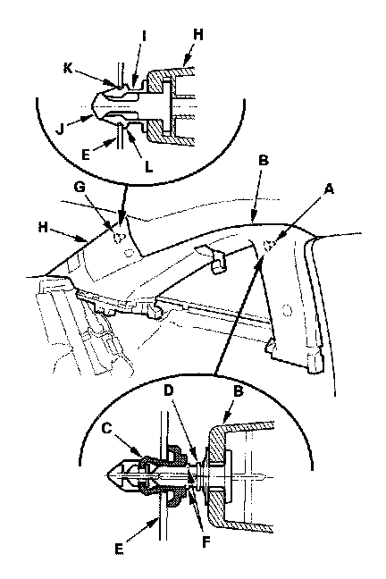
NOTE:
- Follow the quarter pillar trim installation procedure carefully; improper installation could cause the side curtain airbag to deploy improperly and possibly cause injury.
- Put on gloves to protect your hands.
- Use the appropriate tool from the KTC trim tool set to avoid damage when prying components.
- Take care not to scratch the trim and panels.
- The B-pillar upper clip (A) in the quarter pillar trim (B) consists of a grommet (C) and a pin ID). The grommet expanded with the pin secures it to the body panel (E). The projections (F) on the pin is broken during removal, so the clip must be replaced with a new one when the trim is reinstalled.
- The C-pillar upper clip (G) under the airbag lid (H) consists of a resin grommet (I) and a metal pin (J). The groove (K) in the grommet secures it to the body panel. The shoulder (L) on the grommet is broken during removal, so the grommet must be replaced with a new one when the trim is reinstalled.
1. Remove these items:
- Rear side trim panel
- Rear shelf extension
2. Remove the front seat belt upper anchor.
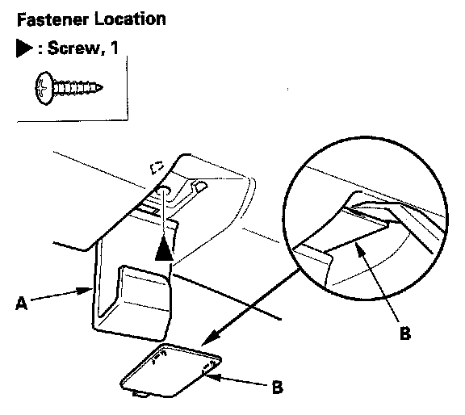
3. Lower the coat hanger (A), pry off the lid (B) with a trim tool, then remove the screw.
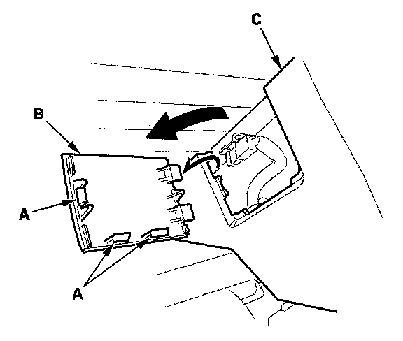
4. Release the hooks (A), then remove the rear window harness cap (B) from the quarter pillar trim (C).
5. Pull the door opening seal away from the B-pillar as needed.
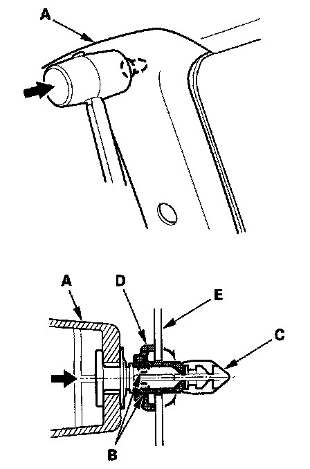
6. Hit the surface of the quarter pillar trim (A) just upon the upper clip with a rubber mallet. Hitting the trim surface breaks the projections (B) on the pin (C) and pushes it into the grommet (D) and against the body (E). The grommet becomes narrow.
NOTE: The clip must be replaced with a new one when the quarter pillar trim is reinstalled.
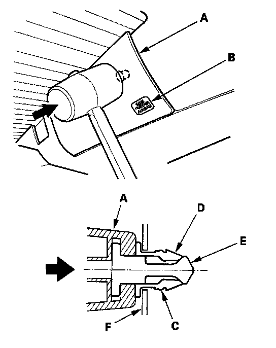
7. Hit the surface of the airbag lid (A) just upon the upper clip with a rubber mallet The clip is halfway between the "SIDE CURTAIN AIRBAG" mark (B) and the rear window. Hitting the lid surface breaks the shoulder (C) on the grommet (D) and pushes the pin (E) and grommet against the body (F).
NOTE:
- The clip must be replaced with a new one when the quarter pillar trim is reinstalled.
- Do not hit the lower side of the airbag lid, or it will be folded and stress-whitened at the middle of its own. It is very delicate part.
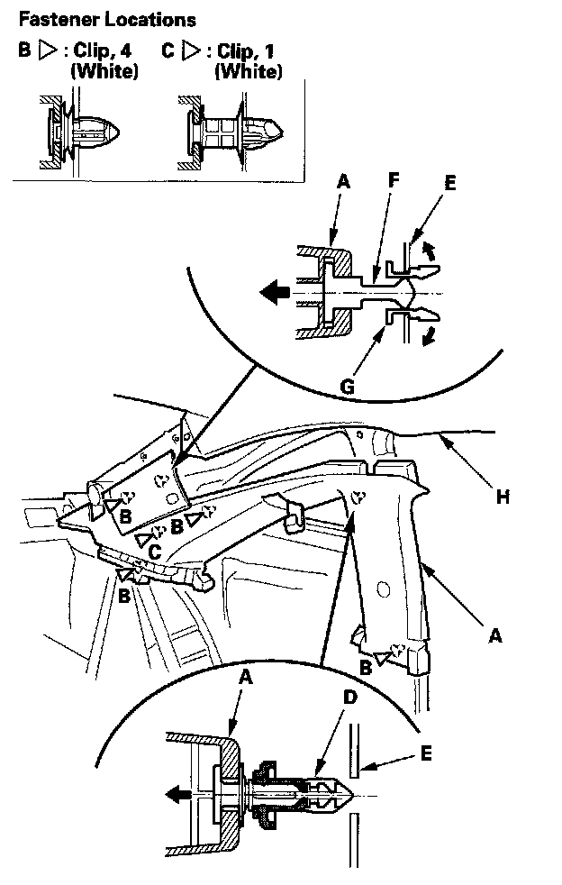
8. Remove the quarter pillar trim (A).
1. Detach and release the clips (B, C, D) from the body (E) and remove the pin (F) from the grommet (G) remaining in the body by pulling the trim back.
2. Lower the trim to release the upper edge of it from the headliner (H).
9. Remove the grommet from the body.
NOTE: The grommet must be replaced with a new one because the it is damaged during removal.
10. If the side curtain airbag has deployed, replace the quarter pillar trim and all clips on the trim with new ones.
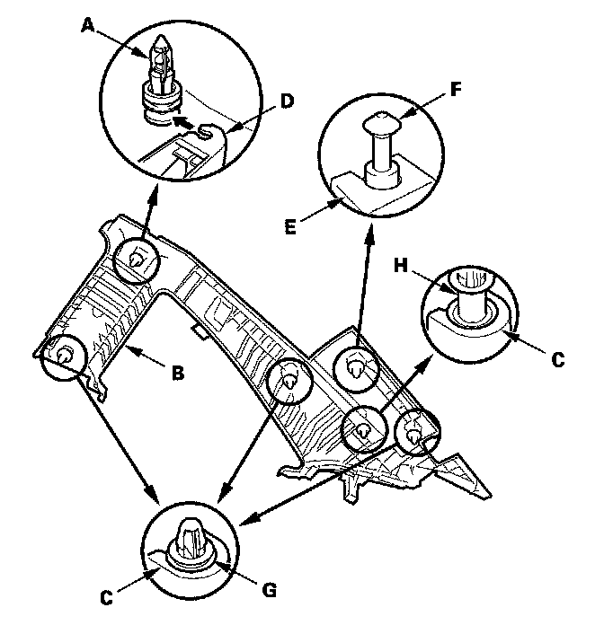
11. If the side curtain airbag has not deployed, remove the clip (A) from the removed quarter pillar trim (B) and discard it. Then check the trim:
- To prevent the side curtain airbags from deploying improperly and possibly causing injury, inspect the quarter pillar trim and replace it if it has any of these types of damage:
- Any cracks, deformations, or stress-whitening in the quarter pillar trim
- Any cracks or stress-whitening in the clip seating surfaces (C, D, E)
- Damaged top of the C-pillar upper clip pin (F)
- If any of the lower clips (G, H) are damaged or stress-whitened, replace them.
- Replace the clip (A) with a new one.
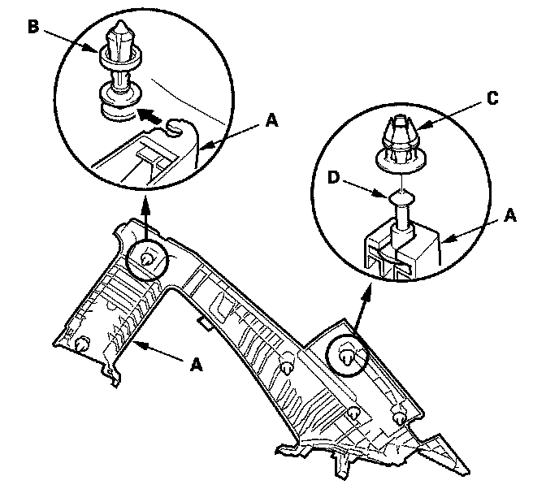
12. Before installing the quarter pillar trim (A), whether replaced or reinstalled, temporarily remove a new clip (B), and the grommet (C) from the pin (D).
13. Check the overlap between the headliner and quarter pillar trim, and if necessary, adjust it.
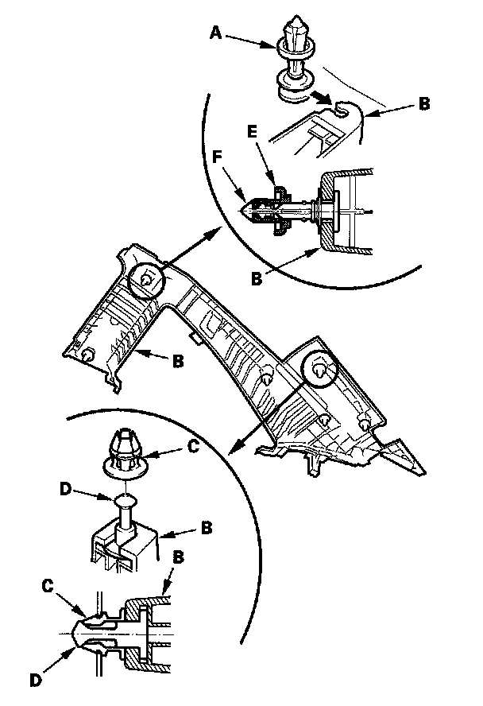
14. Carefully reinstall the clip (A) to the quarter pillar trim (B), and the grommet (C) on the pin (D):
- Be sure that the grommet (E) is nearest to the top of the pin (F) as shown.
- Seat the pin with the grommet on the quarter pillar trim as shown.
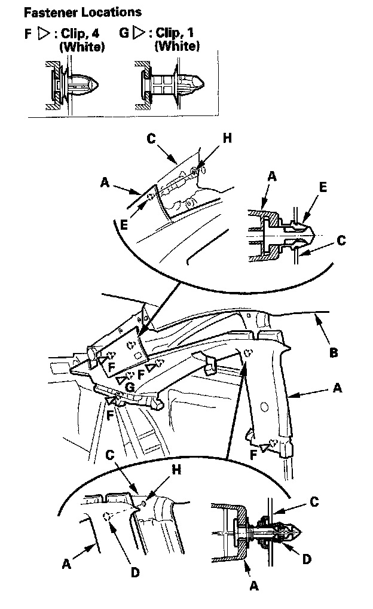
15. Reinstall the quarter pillar trim (A).
1. Fit the upper edge of the trim to the headliner (B).
2. Place the trim over the center/C-pillar (C), and fit its B-pillar upper clip (D), C-pillar upper clip (E), and all of the other clips (F, G) into holes (H) in the body, then lightly push the trim into place.
NOTE:
- Make sure the side curtain airbag isn't tucked down under the clips and ribs.
- Apply pressure to the areas of the trim just upon the quarter/C-pillar upper clips until these clip fittings are felt. If you push too hard, the clip will be damaged, and it will not hold the trim properly.
- Make sure the upper clip portions of the trim don't come off the body by tugging on the trim back.
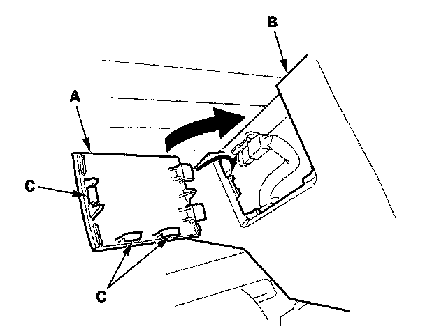
16. Reinstall the rear window harness cap (A) to the quarter pillar trim (B) until its hooks (C) snap into place securely.
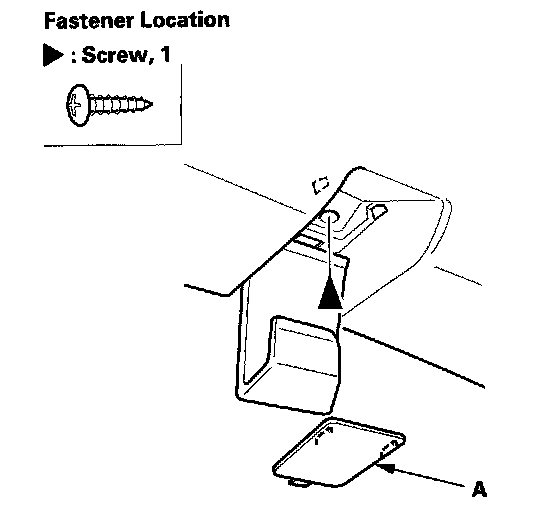
17. Reinstall the screw and the lid (A).
18. Reinstall the door opening seal.
Special Tools Required
KTC trim tool set SOJATP2014 *
* Available through the American Honda Tool and Equipment Program
C-Pillar Trim - 4-door
SRS components are located in this area. Review the SRS component locations and the precautions and procedures before doing repairs or service.
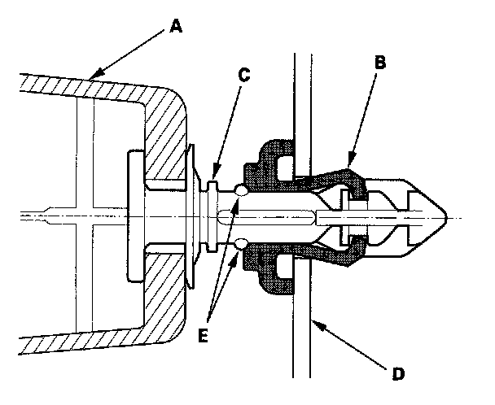
NOTE:
- Follow the C-pillar trim installation procedure carefully; improper installation could cause the side curtain airbag to deploy improperly and possibly cause injury.
- Put on gloves to protect your hands.
- Use the appropriate tool from the KTC trim tool set to avoid damage when prying components.
- Take care not to scratch the trim and panels.
- The front clip in the C-pillar trim (A) consists of a grommet (B) and a pin (C). The grommet expanded with the pin secures it to the body panel (D). The projections (E) on the pin is broken during removal, so the clip must be replaced with a new one when the trim is reinstalled.
1. Remove these items:
- Rear seat cushion
- Rear seat side bolster
- Rear door opening seal, as needed
2. Fold the seat-back forward.
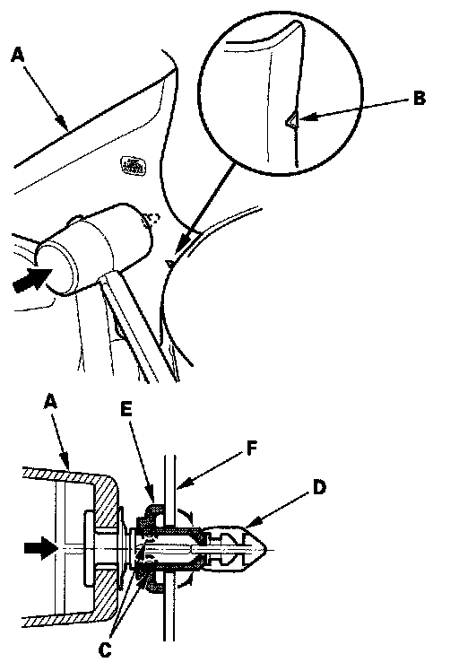
3. Hit the front clip in the C-pillar trim (A) a rubber mallet. The clip is near the triangle mark (B). Hitting the clip breaks the projections (C) on the pin (D) and pushes it into the grommet (E) and against the body (F). The grommet becomes narrow.
NOTE: The clip must be replaced with a new when the C-pillar trim is reinstalled.
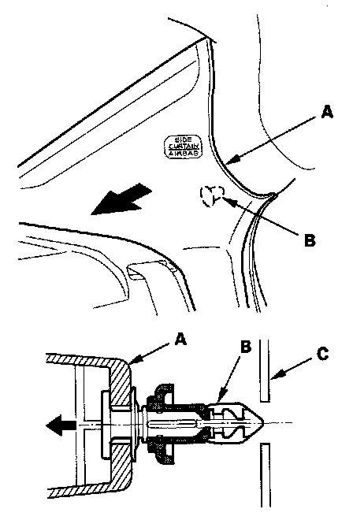
4. Pull the front of the C-pillar trim (A) back by hand to remove the front clip (B) from the body (C).
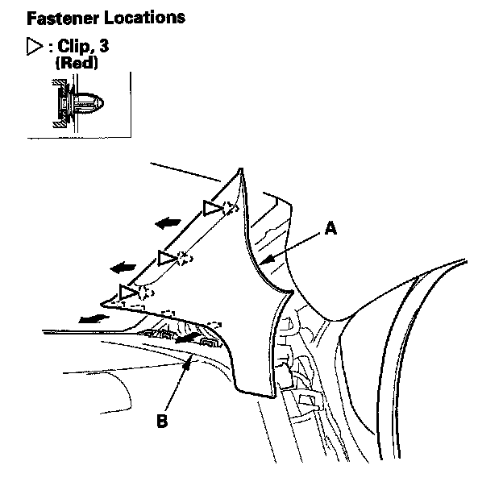
5. Pull the C-pillar trim (A) by hand to detach the clips, then pull the trim up from the rear shelf (B).
6. If the side curtain airbag has deployed, replace the C-pillar trim and all clips on the trim with new ones.
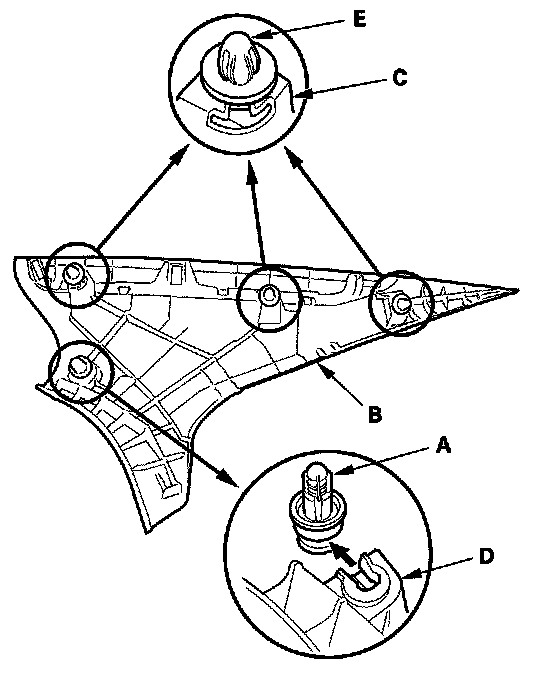
7. If the side curtain airbag has not deployed, remove the front clip (A) from the removed C-pillar trim (B) and discard it. Then check the trim:
- To prevent the side curtain airbags from deploying improperly and possibly causing injury, inspect the C-pillar trim and replace it if it has any of these types of damage:
- Any cracks, deformations, or stress-whitening in the C-pillar trim
- Any cracks or stress-whitened in the clip seating surfaces (C, D)
- Replace the rear clips (E) if it is damaged.
- Replace the front clip with a new one.
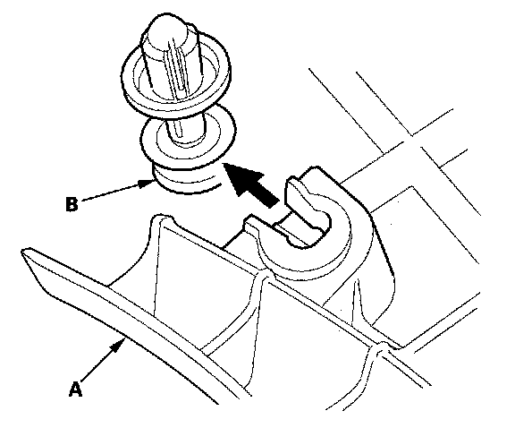
8. Before installing the C-pillar trim (A), whether replaced or reinstalled, temporarily remove new front clip (B).
9. Check the overlap between the headliner and C-pillar trim, and if necessary, adjust it.
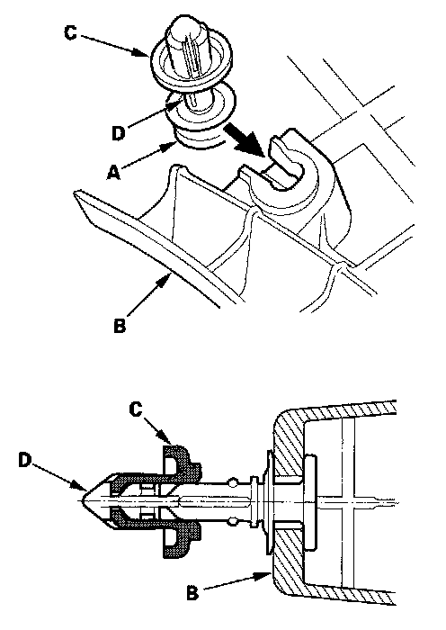
10. Carefully reinstall a new front clip (A) to the C-pillar trim (B). Be sure that the grommet (C) is nearest to the top of the pin (D) as shown.
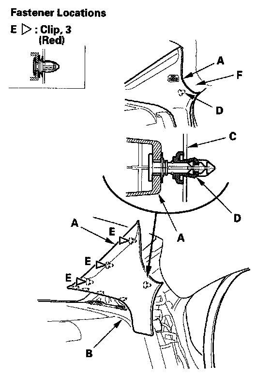
11. Reinstall the C-pillar trim (A).
1. Insert the bottom of the trim into the rear shelf (B).
2. Place the trim over the C-pillar (C), and fit its front clip (D) and rear clips (E) into holes (F) in the C-pillar, then lightly push the trim into place.
NOTE:
- Make sure the side curtain airbag isn't tucked down under the clips and ribs.
- Push rightly on the front clip. If you push too hard, the clip will be damaged, and it will not hold the trim properly.
12. Reinstall the rear door opening seal.